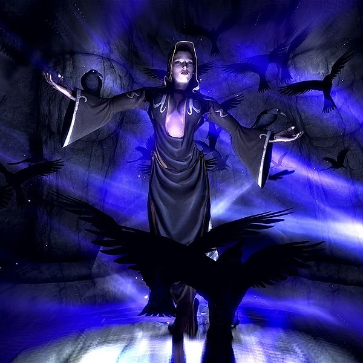

Nightingales
The Nightingales are a secret inner circle within the Thieves Guild, based in Nightingale Hall. The most recent incarnation of the faction was made up of three elite thieves: Mercer Frey, Karliah, and Gallus Desidenius. The Nightingales exist to protect the shrines of the Daedric Prince Nocturnal throughout Skyrim. It is common belief that the Nightingales do not exist, and were simply created as a way to scare Footpads into doing what they are told.
"In the name of Nocturnal, Lady of the Night,
I dedicate myself to the shadows.
May my steps be silent, my blade swift, and my loyalty eternal."

Nocturnal is the
Daedric Prince whose sphere is the night,
darkness and mystery. She is also known as the Night Mistress and Lady Luck.

Nightingale Armor